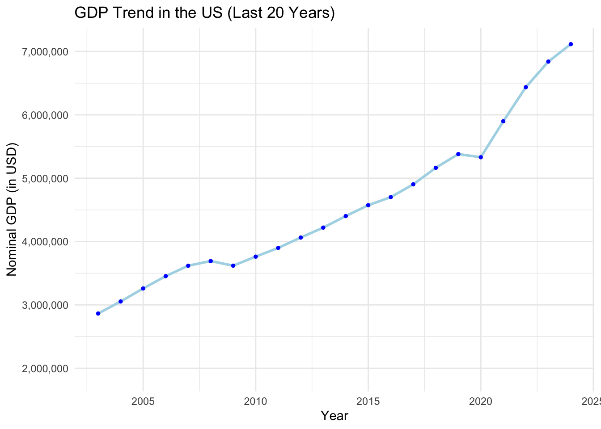
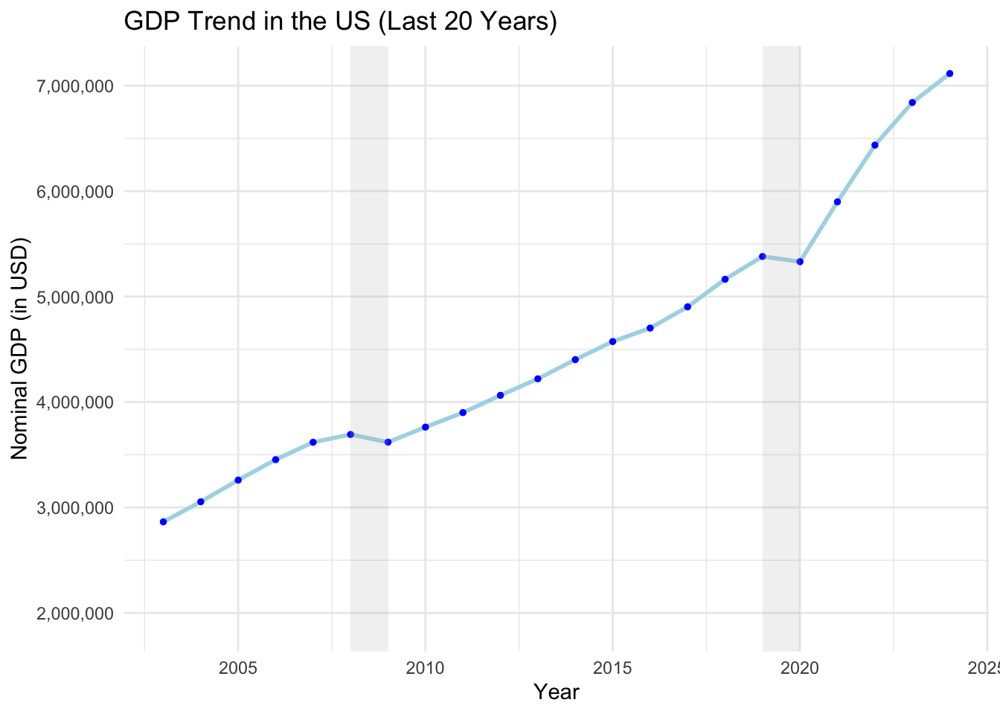
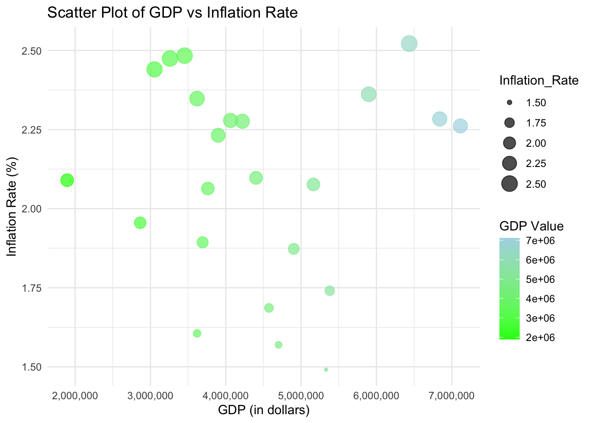

##install.packages("readxl") # Install if not already installed
library(readxl)CSC477_Final-project_Oenardi_101924
Our group chose the Federal Reserve Economic Data (FRED) data source, with the link: https://fred.stlouisfed.org/, because we would like to delve more into the US economy to conduct economic analysis and financial research. Our group think that the dataset contains lots of information that we can draw meaningful relationships and significance to explore. Additionally, there are a lot of different data sets under different sections, which enable us to explore different aspects of the US economy including: macroeconomic analysis, energy prices and consumption, labor market dynamics, and education spending and outcomes.
Context of the FRED Dataset for Macroeconomic Analysis
The Federal Reserve Economic Data (FRED) is a database maintained by the Research division of the Federal Reserve Bank of St. Louis that has more than 816,000 economic time series from various sources, making it a crucial resource for economists, researchers, and policymakers to analyze economic trends and make informed decisions regarding the U.S. economy; essentially, it’s a central repository for a wide range of economic data, allowing users to easily compare and visualize different economic indicators over time.
Who uses the data?
Economists, policy makers, business leaders/owners, researchers, financial market analysts, and students can use the FRED data.
What does the FRED offer? What does the dataset include?
FRED contains frequently updated US macro and regional economic time series at annual, quarterly, monthly, weekly, and daily frequencies. The FRED data source has time series data from mid 1900s and up to the most recent days in 2024. FRED aggregates economic data from a variety of sources, most of which are US government agencies including the Bureau of Labor Statistics, Census Bureau, and other national and international organizations. Some topics that the FRED provide data on include GDP, employment rate, inflation rate, housing price index, trade, and more.
Some aspects that we can explore and the variables to look into to conduct macroeconomic analysis are:
Inflation
10-Year Breakeven Inflation Rate: Represents the market’s expectation for the average annual inflation over the next ten years. Break-even inflation is the difference between the nominal yield on a fixed-rate investment and the real yield (fixed spread) on an inflation-linked investment of similar maturity and credit quality. The latest value implies what market participants expect inflation to be in the next 10 years, on average.
- Units: Percent, Not Seasonally Adjusted
- Frequency: Daily
- Source: Federal Reserve Bank of St. Louis
National Income
- Nominal Gross Domestic Product (GPD): to track the total market value of all finished goods and services produced within a country’s borders in a specific period.
- Source: International Monetary Fund
- Units: Millions of Domestic Currency
- Frequency: Quarterly
- Real Personal Income: adjusted for inflation, it measures the purchasing power of individuals.
- Source: U.S. Bureau of Economic Analysis
- Units: Billions of Chained 2017 Dollars, Seasonally Adjusted Annual Rate
- Frequency: Monthly
Fiscal Policy
Consumer Opinion Surveys: Consumer Prices: Future Tendency for United States: reflects consumers’ level of optimism about the performance of the economy.
Source: Organization for Economic Co-operation and Development
Units: Percentage balance, Seasonally Adjusted
Frequency: Monthly
Federal Debt: Total Public Debt as Percent of Gross Domestic Product: tracks the government’s debt level in relation to the GDP (economic output).
Source: U.S. Office of Management and Budget
Units: Percent of GDP, Seasonally Adjusted
Frequency: Quarterly
Federal Government Current Receipts: tracks the total money the federal government obtains from taxes.
Source: U.S. Bureau of Economic Analysis
Units: Billions of Dollars, Seasonally Adjusted Annual Rate
Frequency: Quarterly
Employment levels
- Unemployment Rate: the unemployment rate represents the number of unemployed as a percentage of the labor force. Labor force data are restricted to people 16 years of age and older, who currently reside in 1 of the 50 states or the District of Columbia, who do not reside in institutions (e.g., penal and mental facilities, homes for the aged), and who are not on active duty in the Armed Forces.
- Source: U.S. Bureau of Labor Statistics
- Units: Percent, Seasonally Adjusted
- Frequency: Monthly
International trade
- Trade Balance: Goods and Services, Balance of Payments Basis: the difference between a country’s value of exports and imports of goods and services over a specific period of time.
- Source: U.S. Bureau of Economic Analysis
- Units: Millions of Dollars, Seasonally Adjusted
- Frequency: Monthly
Where is the data from?
The data is taken from reputable organizations such as the U.S. Bureau of Labor Statistics (BLS), Bureau of Economic Analysis (BEA), Federal Reserve Board, World Bank, and other national and global reputable organizations.
Why is the FRED important?
The FRED offers reliable, intensive, and broad database for analyzing and visualizing key economic indicators, which can help make data-driven and more informed decisions regarding business strategies, investment, and monetary/public policy.
Significance in the real world
Inflation affects purchasing power of consumers, interest rates, wages, and more. Analyzing inflation can help to anticipate inflationary pressures, which would affect the whole economy in various industries. Secondly, the national income measures the overall health of a country financially by providing insight onto the citizen’s economic well-being. Additionally, the fiscal policy variables influence stability and growth by affecting tax income, debt level, government spending, investments, and more. Furthermore, employment levels are a key indicator of the economic health, as it influences consumer spending and business investments. Lastly, international trade shows the country’s global economic imports and exports and helps to understand a country’s competitiveness.
Loading the dataset
# Replace 'your_file.xlsx' with the path to your Excel file
mydata <- read_excel("Final_Project_copy_2.xls")
# View the first few rows of the data
head(mydata)# A tibble: 6 × 3
`Years (DATE)` Average of 10-Year Breakeven Inflation…¹ Average of Nominal G…²
<chr> <dbl> <dbl>
1 2003 1.96 2864112.
2 2004 2.44 3054299.
3 2005 2.47 3259799.
4 2006 2.48 3453896.
5 2007 2.35 3618557.
6 2008 1.89 3692465.
# ℹ abbreviated names: ¹`Average of 10-Year Breakeven Inflation Rate`,
# ²`Average of Nominal Gross Domestic Product for United States`str(mydata)tibble [23 × 3] (S3: tbl_df/tbl/data.frame)
$ Years (DATE) : chr [1:23] "2003" "2004" "2005" "2006" ...
$ Average of 10-Year Breakeven Inflation Rate : num [1:23] 1.96 2.44 2.47 2.48 2.35 ...
$ Average of Nominal Gross Domestic Product for United States: num [1:23] 2864112 3054299 3259799 3453896 3618557 ...GDP Growth and Inflation Expectations
Exploring the relationship between GDP growth and inflation expectations can provide insights into the overall economic stability and help policymakers predict future economic conditions, guiding decisions on interest rates, fiscal policies, and inflation control measures.
Steady Growth in U.S. GDP Trend over the Past 20 Years
## Load the required packages
# install.packages("ggplot2")
library(ggplot2)
# install.packages("dplyr")
library(dplyr)
Attaching package: 'dplyr'The following objects are masked from 'package:stats':
filter, lagThe following objects are masked from 'package:base':
intersect, setdiff, setequal, unionlibrary(scales)
## Renaming variables for simplicty
mydata <- mydata %>%
rename(Year = `Years (DATE)`,
Inflation_Rate = `Average of 10-Year Breakeven Inflation Rate`,
GDP = `Average of Nominal Gross Domestic Product for United States`)
## Converting 'Year' column from character to numeric
mydata$Year <- as.numeric(mydata$Year)Warning: NAs introduced by coercion## Preview the dataset
head(mydata)# A tibble: 6 × 3
Year Inflation_Rate GDP
<dbl> <dbl> <dbl>
1 2003 1.96 2864112.
2 2004 2.44 3054299.
3 2005 2.47 3259799.
4 2006 2.48 3453896.
5 2007 2.35 3618557.
6 2008 1.89 3692465.str(mydata)tibble [23 × 3] (S3: tbl_df/tbl/data.frame)
$ Year : num [1:23] 2003 2004 2005 2006 2007 ...
$ Inflation_Rate: num [1:23] 1.96 2.44 2.47 2.48 2.35 ...
$ GDP : num [1:23] 2864112 3054299 3259799 3453896 3618557 ...# Create the line graph
ggplot(data = mydata, aes(x = Year, y = GDP)) +
geom_line(color = "lightblue", size = 1) +
geom_point(color = "blue", size = 1) + # Add points on the line
labs(title = "GDP Trend in the US (Last 20 Years)",
x = "Year",
y = "Nominal GDP (in USD)") +
scale_y_continuous(labels = scales::comma) +
theme_minimal()Warning: Using `size` aesthetic for lines was deprecated in ggplot2 3.4.0.
ℹ Please use `linewidth` instead.Warning: Removed 1 row containing missing values (`geom_line()`).Warning: Removed 1 rows containing missing values (`geom_point()`).
# Define economic downturn periods (example years)
recessions <- data.frame(
start = c(2008, 2019), # Start of recession
end = c(2009, 2020) # End of recession
)
# Plot the graph with shaded areas for recessions
ggplot(data = mydata, aes(x = Year, y = GDP)) +
geom_line(color = "lightblue", size = 1) +
geom_point(color = "blue", size = 1) + # Add points on the line
geom_rect(data = recessions, aes(xmin = start, xmax = end, ymin = -Inf, ymax = Inf),
fill = "grey", alpha = 0.2, inherit.aes = FALSE) + # Shaded areas
labs(title = "GDP Trend in the US (Last 20 Years)",
x = "Year",
y = "Nominal GDP (in USD)") +
scale_y_continuous(labels = scales::comma) +
theme_minimal()Warning: Removed 1 row containing missing values (`geom_line()`).
Removed 1 rows containing missing values (`geom_point()`).
The graph shows the trend of GDP in the U.S. over the last 20 years. The blue line represents the average annual changes in GDP, while the shaded grey areas highlight two significant periods in U.S. history, which are the 2008 financial crisis and the 2019 COVID-19 pandemic. Overall, the graph visualize how resilient the U.S. economy is despite the face of these challenges, as the GDP appears to continue increasing over the years. In the past 4 years, the GDP has been rising more signfiicantly at a higher pace, as seen from the stepper upward line trend. The significant increase in average GDP year over year indicate __
General trend:
The overall trend of the U.S. GDP shows an upward trend, showing that the economy has been growing significantly throughout the past two decades. The graph shows the periods of expansion and minor dips in GDP, but the overall growth appears steady.
Economic downturns:
There are two shaded areas around 2008 and 2019. The first shaded area around 2008 makrs hte global financial crisis. During this period, the GDP dipped, but by 2010, it started to recover. The other shaded area around 2019 shows the impact of the COVID-19 pandemic. There was a downturn in GDP, however quickly bounced back in the following years.
Overall conclusion
Overall, the graph visualizes how resilient the U.S. economy is despite the face of these challenges, as the GDP appears to continue increasing over the years. In the past four years, the GDP has been rising more significantly at a higher pace, as seen from the steeper upward line trend. The significant increase in average GDP year over year indicates a robust economic recovery, that is driven by strong consumer spending, increase in investment, and favorable fiscal policies that support growth.
Does Higher Inflation Mean Higher GDP?
ggplot(mydata, aes(x = GDP, y = Inflation_Rate, color = GDP)) +
geom_point(aes(size = Inflation_Rate), alpha = 0.7) +
labs(title = "Scatter Plot of GDP vs Inflation Rate",
x = "GDP (in dollars)",
y = "Inflation Rate (%)") +
scale_x_continuous(labels = comma) + # Format x-axis with commas
scale_color_gradient(low = "green", high = "lightblue", name = "GDP Value") +
theme_minimal()
The scatter plots shows the relationship between GDP (in USD) and inflation rate (%). The color of the points represent the GDP value (with lower values being bright green and higher values being light blue), while the size of the poitns reflect the inflation rate (with smaller points showing a lower rate and larger points showing a higher rate).
Unclear correlation between GDP and Inflation Rate
The scatterplot does not seem to show a strong clear pattern between GDP and inflation rate. The points spread across different GDP values, without a clear upward or downward trend. This could suggest that GDP and inflation are not strongly correlated as they don’t have a direct, simple relationship.
High GDP values do not always align with high Inflation Rates, and vice versa
However, it is noticable that the points with higher inflation rates are scattered across both high and low GDP values, which may indicate that even as GDP changes, the inflation does not necessarily flow a predictable path. In other words, high GDP does not directly align with high inflation rates, and vice versa.
Overall conclusion
In summary, this graph shows that there isn’t a straightforward relationship between GDP and Inflation Rate. The factors affecting inflation may be more complex and not directly tied to GDP alone.